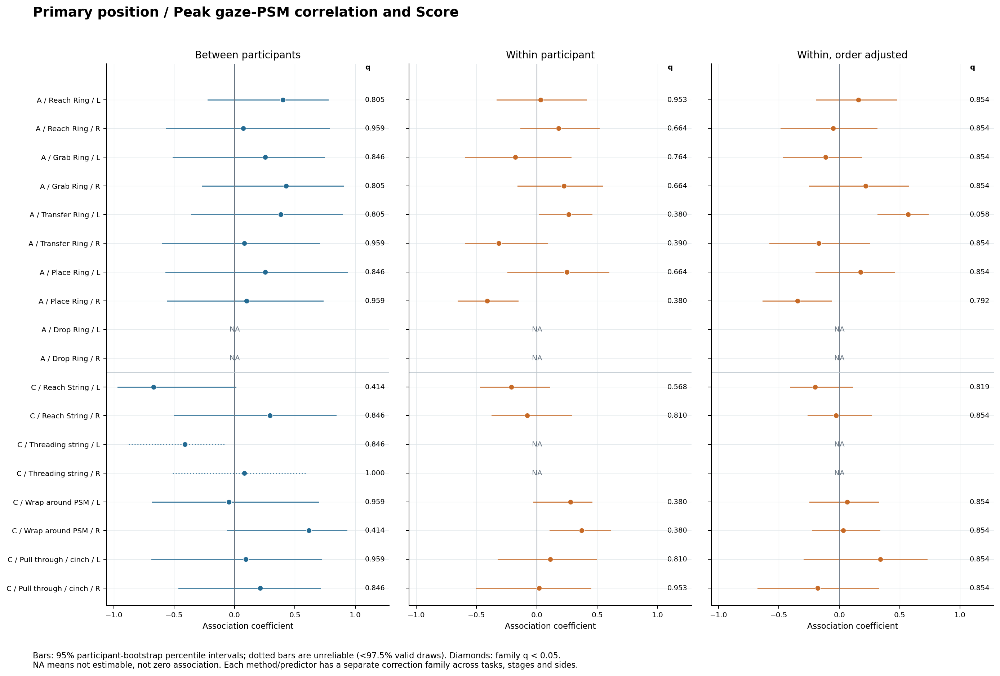
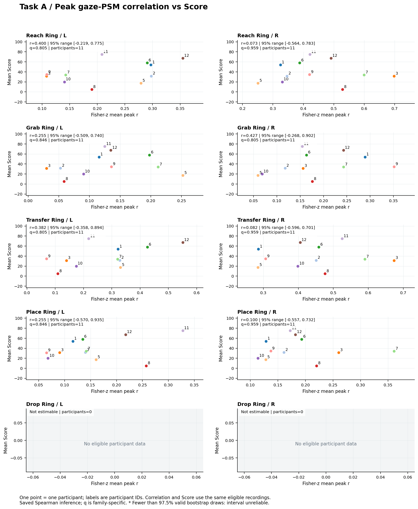
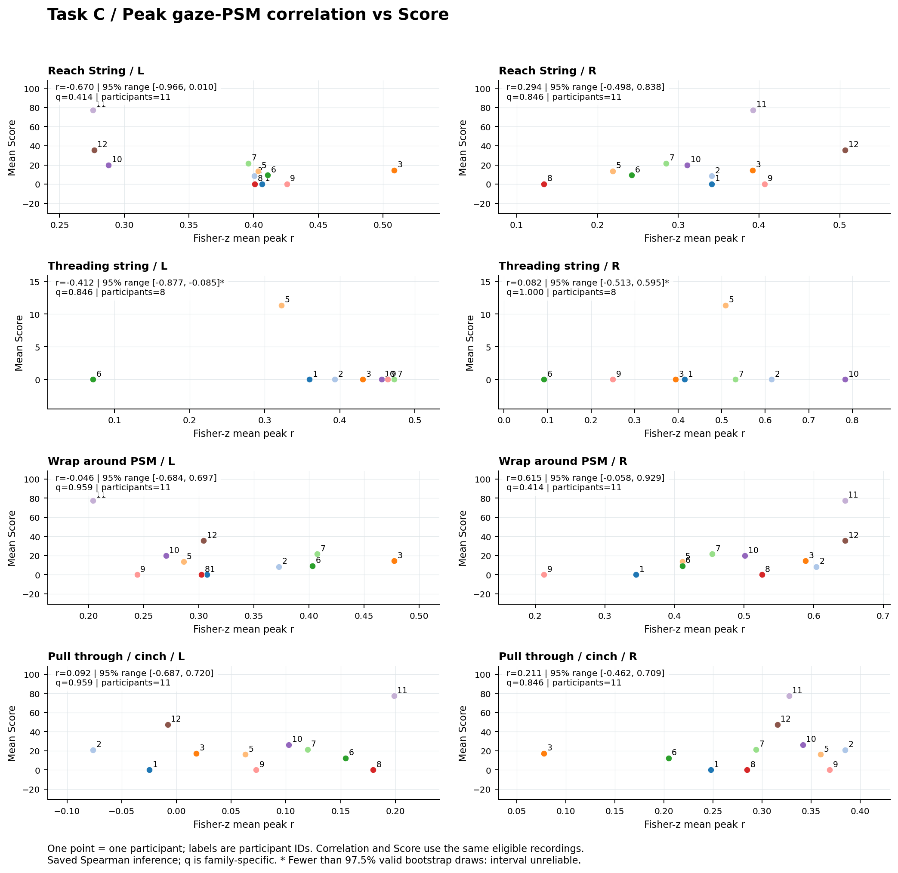

主分析：位置 peak_r 与 Score
范围为 variant=primary、position、PSM in stage。A/C、阶段和左右侧各自估计；预设 18 个条件。每位参与者的相关指标用 Fisher-z 平均后反变换，Score 用同一批有效录制的算术平均。图中一点代表一人，关联检验为参与者间 Spearman。
| 任务 | 阶段 | 侧 | 录制数 | 人数 | 关联系数 | 95% 重抽样区间 | p | 家族 q | 逐人剔除范围 | 状态 |
|---|---|---|---|---|---|---|---|---|---|---|
| A | reach ring | 左 | 33 | 11 | 0.400 | [-0.219, 0.775] | 0.227 | 0.805 | [0.261, 0.503] | 可估计 |
| A | reach ring | 右 | 33 | 11 | 0.073 | [-0.564, 0.783] | 0.843 | 0.959 | [-0.139, 0.333] | 可估计 |
| A | grab ring | 左 | 33 | 11 | 0.255 | [-0.509, 0.740] | 0.454 | 0.846 | [0.091, 0.576] | 可估计 |
| A | grab ring | 右 | 33 | 11 | 0.427 | [-0.268, 0.902] | 0.188 | 0.805 | [0.309, 0.624] | 可估计 |
| A | transfer ring | 左 | 33 | 11 | 0.382 | [-0.358, 0.894] | 0.252 | 0.805 | [0.248, 0.552] | 可估计 |
| A | transfer ring | 右 | 33 | 11 | 0.082 | [-0.596, 0.701] | 0.817 | 0.959 | [-0.139, 0.224] | 可估计 |
| A | place ring | 左 | 32 | 11 | 0.255 | [-0.570, 0.935] | 0.450 | 0.846 | [0.006, 0.552] | 可估计 |
| A | place ring | 右 | 33 | 11 | 0.100 | [-0.557, 0.732] | 0.775 | 0.959 | [-0.091, 0.370] | 可估计 |
| A | drop ring | 左 | 0 | 0 | — | — | — | — | — | 有效参与者不足 6 人 |
| A | drop ring | 右 | 0 | 0 | — | — | — | — | — | 有效参与者不足 6 人 |
| C | reach string | 左 | 50 | 11 | -0.670 | [-0.966, 0.010] | 0.029 | 0.414 | [-0.816, -0.558] | 可估计 |
| C | reach string | 右 | 50 | 11 | 0.294 | [-0.498, 0.838] | 0.386 | 0.846 | [0.080, 0.541] | 可估计 |
| C | threading string through tower | 左 | 18 | 8 | -0.412 | [-0.877, -0.085] † | 0.496 | 0.846 | [-0.612, -0.408] | 可估计 |
| C | threading string through tower | 右 | 18 | 8 | 0.082 | [-0.513, 0.595] † | 1.000 | 1.000 | [0.000, 0.204] | 可估计 |
| C | wrap around psm | 左 | 50 | 11 | -0.046 | [-0.684, 0.697] | 0.899 | 0.959 | [-0.225, 0.276] | 可估计 |
| C | wrap around psm | 右 | 50 | 11 | 0.615 | [-0.058, 0.929] | 0.052 | 0.414 | [0.497, 0.742] | 可估计 |
| C | pull through and cinch | 左 | 36 | 11 | 0.092 | [-0.687, 0.720] | 0.793 | 0.959 | [-0.215, 0.261] | 可估计 |
| C | pull through and cinch | 右 | 36 | 11 | 0.211 | [-0.462, 0.709] | 0.529 | 0.846 | [0.091, 0.462] | 可估计 |
主分析家族：primary / peak_r / between_participants，A/C、全部阶段及左右侧一起校正，仅纳入可计算的 p 值。表中“—”为不可估计或不适用，不能解释为 0 或不显著。† 表示有效 bootstrap 比例低于 97.5%，该区间不可靠。



查看主分析各条件的录制覆盖
| 任务 | 阶段 | 侧 | 候选录制 | 有可用 Score | 有效录制 | 人数 | 有效非正指标 | 有效零分 | 边界峰 |
|---|---|---|---|---|---|---|---|---|---|
| A | reach ring | 左 | 33 | 33 | 33 | 11 | 0 | 7 | 3 |
| A | reach ring | 右 | 33 | 33 | 33 | 11 | 0 | 7 | 1 |
| A | grab ring | 左 | 33 | 33 | 33 | 11 | 2 | 7 | 4 |
| A | grab ring | 右 | 33 | 33 | 33 | 11 | 1 | 7 | 6 |
| A | transfer ring | 左 | 33 | 33 | 33 | 11 | 1 | 7 | 2 |
| A | transfer ring | 右 | 33 | 33 | 33 | 11 | 0 | 7 | 1 |
| A | place ring | 左 | 33 | 33 | 32 | 11 | 0 | 7 | 3 |
| A | place ring | 右 | 33 | 33 | 33 | 11 | 0 | 7 | 2 |
| A | drop ring | 左 | 1 | 1 | 0 | 0 | 0 | 0 | 0 |
| A | drop ring | 右 | 1 | 1 | 0 | 0 | 0 | 0 | 0 |
| C | reach string | 左 | 51 | 50 | 50 | 11 | 1 | 35 | 3 |
| C | reach string | 右 | 51 | 50 | 50 | 11 | 2 | 35 | 2 |
| C | threading string through tower | 左 | 19 | 19 | 18 | 8 | 0 | 17 | 2 |
| C | threading string through tower | 右 | 19 | 19 | 18 | 8 | 0 | 17 | 3 |
| C | wrap around psm | 左 | 51 | 50 | 50 | 11 | 0 | 35 | 10 |
| C | wrap around psm | 右 | 51 | 50 | 50 | 11 | 1 | 35 | 7 |
| C | pull through and cinch | 左 | 37 | 36 | 36 | 11 | 10 | 21 | 8 |
| C | pull through and cinch | 右 | 37 | 36 | 36 | 11 | 1 | 21 | 16 |